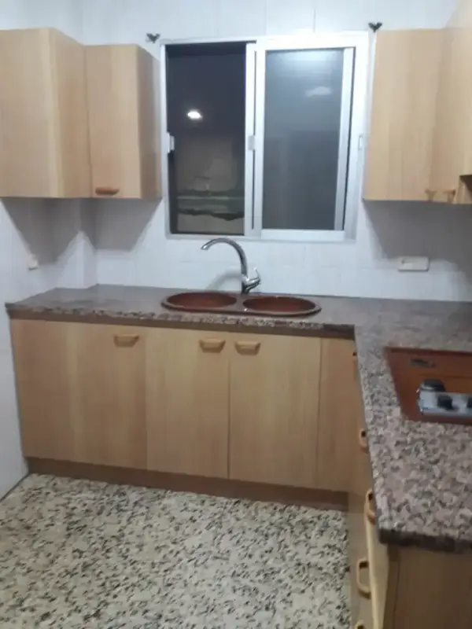
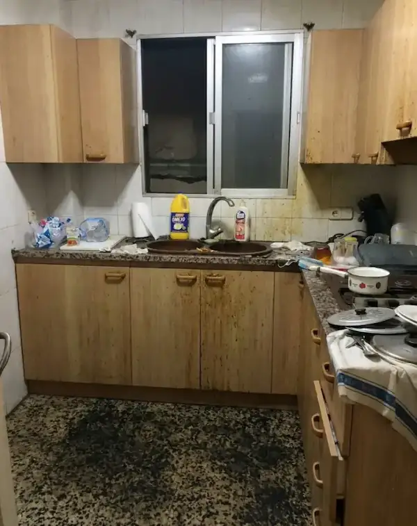
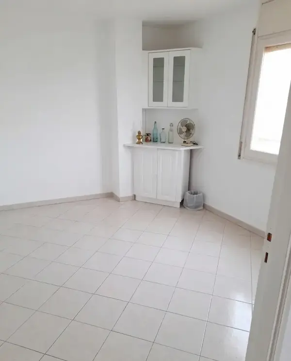
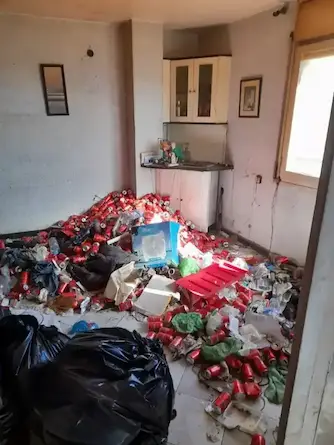

Neteja per síndrome de Diògenes
Cuina · Barcelona · Recuperació total en 2 dies


Herències, defuncions, mudances, Diògenes i canvi de llogaters.
L'acompanyem en cada pas. Sense sorpreses. Sense estrès.
Des de 750€ · Preu tancat · Sense visita prèvia · Resposta < 1h
Treballem amb famílies, hereus, administradors i immobiliàries. Amb sensibilitat i eficàcia en cada context.
Màxima sensibilitat. Ens encarreguem de tot perquè no hagi de preocupar-se de res.
Saber-ne mésBuidat, valoració de béns i gestió documental per agilitzar el procés successori.
Saber-ne mésProtocols especialitzats. Discreció total. Recuperem l'immoble des de zero.
Saber-ne mésPis impecable i llest per al nou llogater. Ens adaptem als seus terminis.
Saber-ne mésBuidat, neteja i pintura. L'habitatge llest per al fotògraf, venda o reforma.
Saber-ne mésCol·laborem amb administradors de finques i immobiliàries de tota l'àrea metropolitana.
Saber-ne mésPreus orientatius per a pis estàndard de 50–60m² a Barcelona. Cada cas és únic — sol·liciti valoració gratuïta.
Pis estàndard 50-60m²
Pis estàndard 50-60m²
Pis estàndard 50-60m²
* Preus orientatius. El preu final depèn del volum, accés i estat de l'habitatge. Veure guia completa de preus
Retirem absolutament tot el que hi ha al pis. Vostè només ha d'obrir la porta.
Sol·licitar valoració gratuïtaProjectes reals. Llisqueu per comparar l'abans i el després.
Cuina · Barcelona · Recuperació total en 2 dies


Habitació · Àrea metropolitana · Buidat complet en 1 dia


Un sol interlocutor, un sol pressupost, zero estrès.
Màxima sensibilitat i discreció. Gestionem tot per alleujar la càrrega en moments difícils.
Veure guia completaProtocols especialitzats amb equips de protecció. Discreció i solució integral garantida.
Veure serveiDeixem el seu pis impecable i llest per al nou llogater en el termini que necessiti.
Veure guia completaEn alguns casos el buidat pot sortir sense cost si el contingut té valor comercial suficient.
Descobrir quan★★★★★"Després del faleciment de la meva mare, buidar el seu pis em semblava impossible. L'equip ho va fer tot amb enorme sensibilitat. Van gestionar absolutament tot i van deixar el pis impecable."
★★★★★"Transparents, ràpids i amb tracte excel·lent. El pressupost no va tenir ni un euro de sobrecost. Els recomano sense dubte a qualsevol que necessiti buidar un pis a Barcelona."
Truca, escriu o ompli el formulari. Li respondrem en menys de 1 hora.
Visitem l'habitatge i li oferim pressupost tancat sense compromís.
Signem contracte amb preu tancat. El que pressupostem és el que paga.
Executem la feina amb rapidesa, respecte i gestió responsable dels residus.
Li respondrem en menys de 1 hora. Sense compromís, sense cost.
Dilluns–Divendres: 8:00–20:00
Dissabtes: 9:00–14:00
Ompli el formulari i li truquem en menys de 1 hora amb un pressupost orientatiu.
Consells, guies i casos reals de buidat de pisos a Barcelona.
Tots els factors que influeixen en el preu, amb exemples reals i rangs verificats.
Llegir guiaAspectes emocionals, burocràtics i pràctics per gestionar el buidat després d'una pèrdua.
Llegir guiaPreguntes clau i senyals d'alerta per no equivocar-se en l'elecció.
Llegir guiaEl preu parteix des de 750€ per a un pis estàndard de 50-60m². Oferim valoració gratuïta i pressupost tancat. Veure guia completa de preus.
Sí, som especialistes en buidat per defunció amb tracte sensible i discret. Ens encarreguem de tota la gestió per alleujar la càrrega emocional i burocràtica.
Comptem amb protocols especialitzats per a Diògenes. Discreció màxima, equips de protecció i recuperació integral de l'immoble.
En alguns casos, quan el contingut té valor comercial suficient, el buidat pot sortir sense cost. Consulti'ns per valorar el seu cas.
Realitzem buidat en 24-48 hores a tota Barcelona. Per a urgències, comptem amb servei same-day adaptant-nos als seus terminis.
Sí, cobrim tota la província sense cost addicional: Barcelona ciutat, L'Hospitalet, Badalona, Sabadell, Terrassa i més de 15 municipis.
Practiquem gestió responsable: valorem i venem objectes amb valor, donem en bon estat a organitzacions benèfiques, reciclem i gestionem residus complint normatives mediambientals.
Sí, oferim servei integral per a herències: buidat, valoració de béns, gestió documental i assessorament per agilitzar tot el procés successori.
Treballem en més de 15 municipis sense cost addicional de desplaçament
Servei Premium Sitges